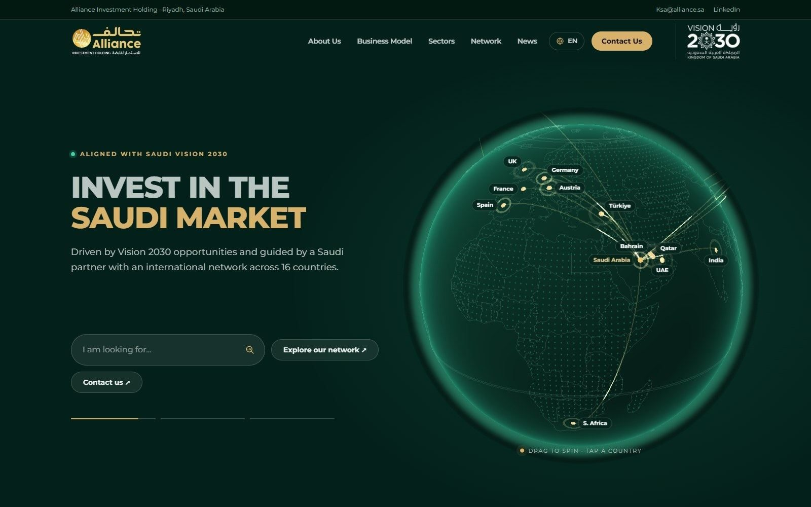
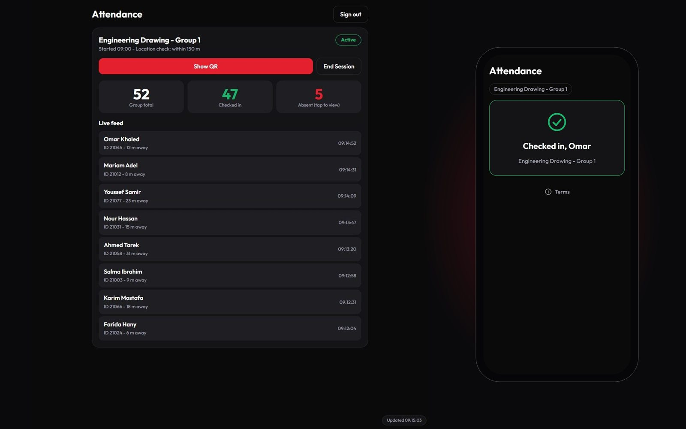
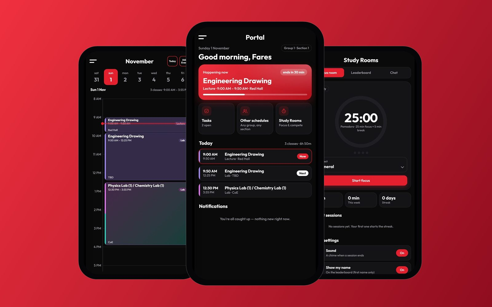
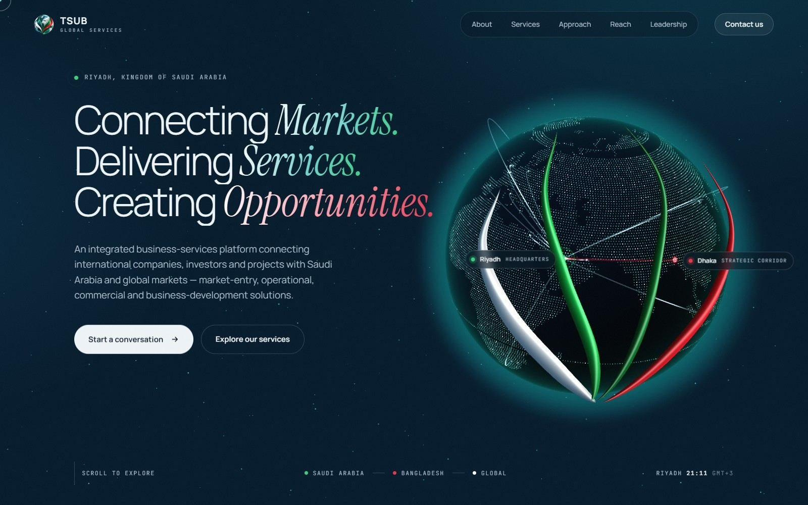

4D tesseractمكعّب رباعي الأبعاد· drag to rotate· اسحب لتديره· swipe sideways to spin· اسحب يمينًا ويسارًا لتديره
Fares Elzouhiry — Front-end developerفارس الزهيري — مطوّر واجهات أمامية
Websites from another dimension.مواقع من بُعدٍ آخر.
Real-time 3D, bilingual, designed and coded by hand.ثلاثية الأبعاد ولحظية وبلغتين، مصممة ومبرمجة يدويًا.
See the workشاهد الأعمال01 / 04 — Company website · Riyadhموقع شركة · الرياض
Alliance Investmentتحالف للاستثمار
A six-language site that opens on a live 3D globe of a 16-country network.موقع بست لغات يبدأ بكرة أرضية حيّة لشبكة من 16 دولة.
6 designs for the CEO6 تصميمات للرئيس التنفيذي · Gateway wonفاز Gateway

02 / 04 — Live attendance · Justerحضور مباشر · Juster
Doctor Dashboardلوحة الدكتور
Students scan the doctor's QR code and appear in the list instantly — only from inside the hall.يمسح الطلاب رمز QR الخاص بالدكتور فيظهرون في القائمة فورًا — من داخل القاعة فقط.
Pagesالصفحات · sample dataبيانات تجريبية

03 / 04 — Student app · Justerتطبيق للطلاب · Juster
University Appتطبيق الجامعة
The university in a student's pocket: live schedule, tasks and focus rooms. Works offline.الجامعة في جيب الطالب: الجدول لحظة بلحظة، والمهام، وغرف المذاكرة. يعمل دون إنترنت.
Pagesالصفحات

04 / 04 — Company website · Riyadhموقع شركة · الرياض
TSUB GlobalTSUB Global
A cinematic site linking Saudi Arabia and Bangladesh, built around a 3D globe and the logo's ribbons.موقع سينمائي يربط السعودية وبنغلاديش، مبني حول كرة أرضية ثلاثية الأبعاد وأشرطة الشعار.
Pagesالصفحات

Contactتواصل